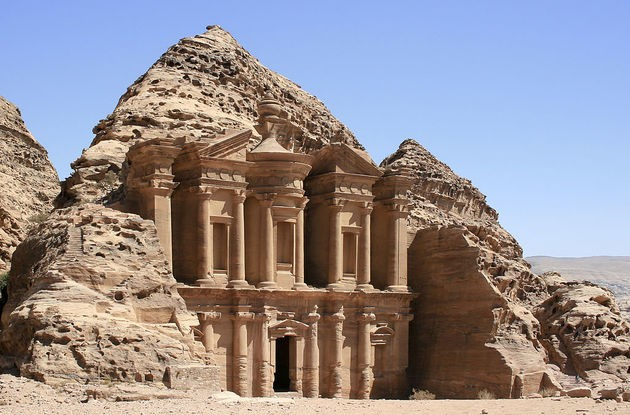

Place you should go! |
|||
| Eiffel Tower- France | Iguazú falls - Brazil | London - England | Manhattan - New York |
|---|---|---|---|
 |
 |
||
| The Roman Colosseum - Italy | Great Wall of China - China | Christ the Redeemer - Brazil | Great Wall of China - China |
 |
 |
 | |
Top 5 travel sites
Let's talk about the best web sites to find very good tips and ideas of trip. I carefully read and approved the contentent on this websites before share with you. All of the web sites I selected has a very good content, with pictures and many experiences. Enjoy it!
Bests travel tips
- Always pack a towel
- Buy a small backpack/suitcase
- Pack light
- But take extra socks
- Make sure to use no-fee bank cards
- Travel by yourself at least once
It’s the key to successful galactic hitchhiking and plain common sense. You never know when you will need it, whether it’s at the beach, on a picnic, or just to dry off. While many hostels offer towels, you never know and carrying a small towel won’t add that much weight to your bag.
By purchasing a small backpack (I like something around 35/40 liters), you will be forced you to pack light and avoid carrying too much stuff. Humans have a natural tendency to want to fill space so if you pack light but have lots of extra room in your bag, you’ll end up going “well, I guess I can take more” and then regret it.
t’s OK to wear the same t-shirt a few days in a row. Take half the clothes you think you will need…you won’t need as much as you think. Write down a list of essentials, cut it in half, and then only pack that! Plus, since you bought a small backpack like I said, you won’t have much room for extra stuff anyways!
Disasters happen. It’s always good to have a backup in case you get robbed or lose a card. You don’t want to be stuck somewhere new without access to your funds. I once had a card duplicated and a freeze put on it. I couldn’t use it for the rest of my trip. I was very happy I had an extra and not like my friend, who didn’t and was forced to borrow money from me all the time!
Don’t give banks your hard-earned money. Keep that for yourself and spend it on your travels. Get a credit card and debit card that doesn’t charge a foreign transaction fee or an ATM fee. Over the course of a long trip, the few dollars they take every time will really add up!
You’ll learn a lot about yourself and how to become independent. It’s a cliché, but it’s true. Traveling solo taught me how to fend for myself, talk to people, and handle unfamiliar situations with ease. It’s made me comfortable with myself, helped me learn about what I’m capable of, and allowed me to be super selfish and do whatever I want! It can take some getting used to if you’ve never done it before but do it at least once. Make yourself uncomfortable and surprise yourself. You’ll learn valuable life skills when you push yourself!
List of the Seven Wonders of the modern World
| Name | Location |
|---|---|
| The city of Petra | Petra (Jordania) |
| Christ the Redeemer | Rio-de-Janeiro (Brazil) |
| The Machu Picchu | Cuzco (Peru) |
| Chichen Itza | Valladolid (Mexico) |
| The Colosseum | Roma (Italia) |
| Taj Mahal | Agra (India) |